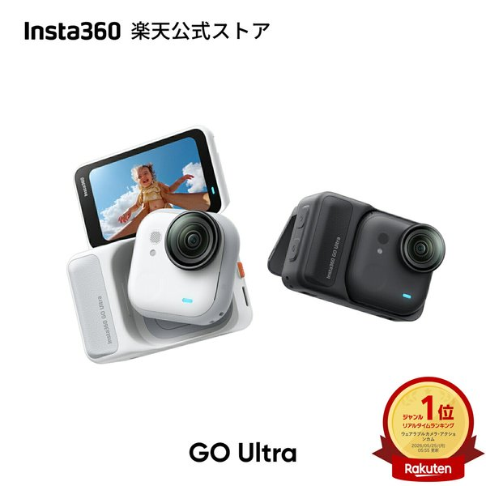
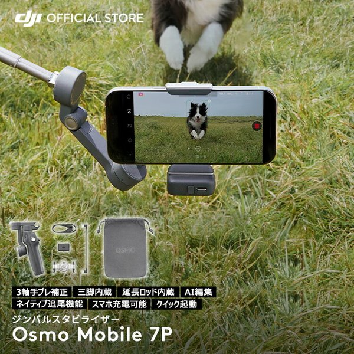
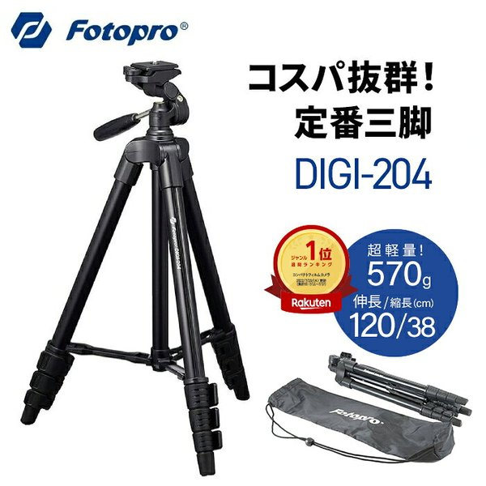
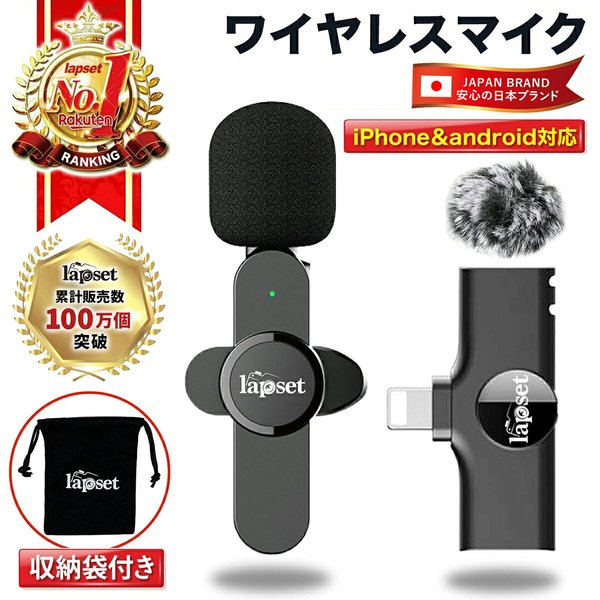
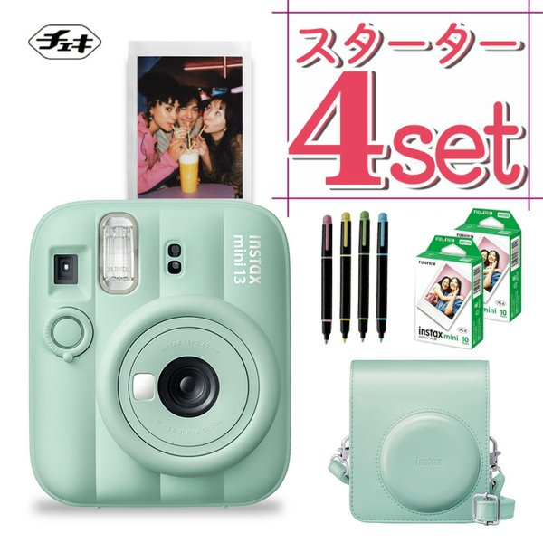
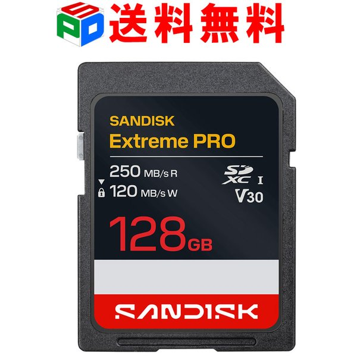
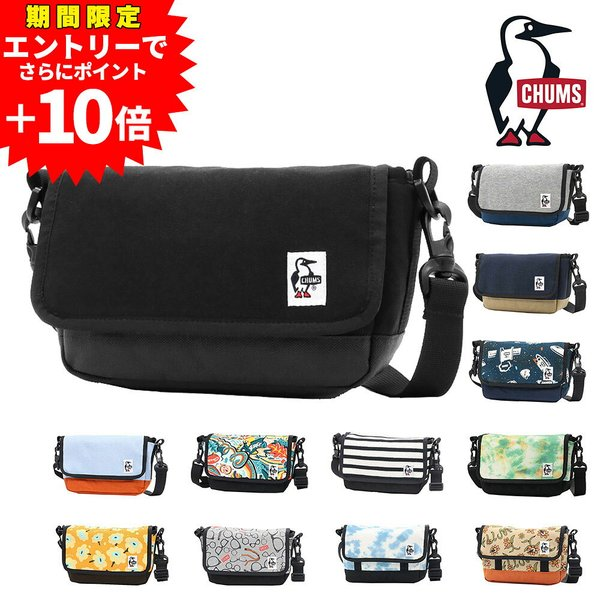
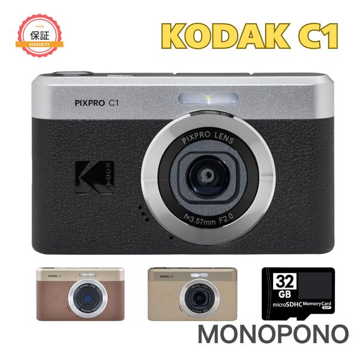
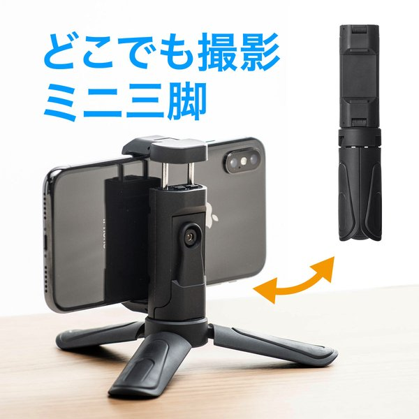

【2026年ブラックフライデー】冬の旅行・イベント・家族の思い出を綺麗に残す！カメラ・スマホジンバル・チェキ・SDカード10選
冬は、旅行やイルミネーション、子どもの発表会と、撮る機会が増える季節です。ところがスマホの動画は、歩くと揺れる、暗いとざらつく、音が小さい、という3点で失敗しがちです。
そこで揃えたいのが、手ブレを抑える機材、音を拾う機材、そしてデータを守るメディアです。歩きながら撮るなら、スマホジンバルか手ブレ補正付きのアクションカメラが効きます。家族の会話や子どもの声を残すなら、スマホ内蔵マイクではなくピンマイクを使ってください。動画は容量を食うので、128GBのSDカードを1枚入れておくと、旅行中に「容量がありません」で撮れなくなる事態を避けられます。その場で紙の写真を渡したいなら、チェキはスマホにない価値があります。三脚は、集合写真を誰かに頼まなくて済むので、家族旅行では地味に活躍します。
本記事では、楽天市場で人気・高評価のカメラと撮影ガジェット10選を、実売価格とレビュー評価つきで写真付き紹介します。
- おすすめ10選 スペック・特徴比較表
- BEST 1｜Brave7 アクションカメラ（4K60FPS・IPX8防水10m・6軸手ブレ補正）
- BEST 2｜GO Ultra Vlogカメラ（ハンズフリーPOV・10m防水・200分バッテリー）
- BEST 3｜Osmo Mobile 7P スマホジンバル（3軸・三脚内蔵・折りたたみ）
- BEST 4｜三脚 DIGI-204（アルミ4段・120cm・スマホホルダー付）
- BEST 5｜ワイヤレスピンマイク（360°集音・風防付き・iPhone／Android対応）
- BEST 6｜チェキ instax mini 13 スターター4点セット（純正ケース・フィルム20枚・デコペン）
- BEST 7｜Extreme PRO SDXCカード 128GB（250MB/s・V30・UHS-I）
- BEST 8｜スモールカメラショルダー 2L CH60-0806（スウェットナイロン）
- BEST 9｜PIXPRO C1 コンパクトデジタルカメラ（F2.0・チルト液晶・3色）
- BEST 10｜スマホ用 ミニ三脚（卓上・軽量・スマホホルダー一体）
- 【読者負担0円】買わなくても得する無料サービス
- まとめ：旅とイベントの撮影ガジェット10選の選び方
| 順位 | 商品名 | ブランド | 最大の特徴・おすすめ理由 | 総合評価 |
|---|---|---|---|---|
| BEST 1 | Brave7 アクションカメラ（4K60FPS・IPX8防水10m・6軸手ブレ補正） | AKASO | ケースなしで水深10mの防水 | 4.11 |
| BEST 2 | GO Ultra Vlogカメラ（ハンズフリーPOV・10m防水・200分バッテリー） | Insta360 | マグネットで胸元に付けてハンズフリー撮影 | 4.48 |
| BEST 3 | Osmo Mobile 7P スマホジンバル（3軸・三脚内蔵・折りたたみ） | DJI | 3軸補正で歩き撮りが滑らか | 4.52 |
| BEST 4 | 三脚 DIGI-204（アルミ4段・120cm・スマホホルダー付） | Fotopro（フォトプロ） | スマホホルダー付きで1台2役 | 4.61 |
| BEST 5 | ワイヤレスピンマイク（360°集音・風防付き・iPhone／Android対応） | lapset | 挿すだけで使える（アプリ不要） | 4.55 |
| BEST 6 | チェキ instax mini 13 スターター4点セット（純正ケース・フィルム20枚・デコペン） | 富士フイルム | 純正ケース・フィルム20枚・デコペン付き | 4.87 |
| BEST 7 | Extreme PRO SDXCカード 128GB（250MB/s・V30・UHS-I） | SanDisk | 読み出し最大250MB/s | 4.60 |
| BEST 8 | スモールカメラショルダー 2L CH60-0806（スウェットナイロン） | CHUMS（チャムス） | 容量2Lでミラーレス1台が入る | 4.67 |
| BEST 9 | PIXPRO C1 コンパクトデジタルカメラ（F2.0・チルト液晶・3色） | KODAK | 明るいF2.0レンズ | 4.77 |
| BEST 10 | スマホ用 ミニ三脚（卓上・軽量・スマホホルダー一体） | サンワサプライ | 1,380円で試しやすい | 4.51 |
Brave7 アクションカメラ（4K60FPS・IPX8防水10m・6軸手ブレ補正）

旅行やイベントの動画を1台で残すなら、まず候補になるアクションカメラです。4K60FPSで撮影でき、本体はIPX8の防水で水深10mまで対応するため、ケースなしで海やプール、雪遊びにも持ち込めます。6軸の手ブレ補正とWi-Fi接続を備え、撮った映像はスマホですぐ確認できます。付属マウントを使えば自転車やヘルメットにも固定できます。楽天市場での実売価格は約22,499円（2026年11月時点）。
- ケースなしで水深10mの防水
- 4K60FPS＋6軸手ブレ補正
- Wi-Fiでスマホに転送できる
- レビューは292件で、暗い場所の画質はスマホの上位機種に一歩譲る
GO Ultra Vlogカメラ（ハンズフリーPOV・10m防水・200分バッテリー）

手のひらに収まるサイズのVlogカメラで、付属のマグネットで胸元や帽子に付ければ、両手が空いたまま家族の目線で撮れます。FlowStateの手ブレ補正で、歩きながらの撮影でも画面が揺れにくいのが特徴です。バッテリーは最大200分、10m防水なので、旅行先の水遊びにもそのまま持ち込めます。スマホを取り出すほどではない「ちょっとした瞬間」を残したい人に向いています。楽天市場での実売価格は約58,300円（2026年11月時点）。
- マグネットで胸元に付けてハンズフリー撮影
- 最大200分のバッテリー
- 10m防水で水辺でも使える
- レビューは120件で、本体が小さいぶん液晶で構図を細かく確認するのには向かない
Osmo Mobile 7P スマホジンバル（3軸・三脚内蔵・折りたたみ）

スマホを挟むだけで、歩きながらの撮影でも画面が滑らかに動く3軸ジンバルです。折りたたむとバッグに入るサイズになり、グリップを開けば三脚になるので、家族写真のタイマー撮影にも使えます。専用アプリの自動追尾を使えば、動く子どもやペットを画面の中央に捉え続けます。旅行の動画が「手ブレで見返せない」と感じている人ほど効果が出ます。楽天市場での実売価格は約11,990円（2026年11月時点）。
- 3軸補正で歩き撮りが滑らか
- グリップが三脚になる
- 自動追尾で動く被写体を捉える
- レビューは97件で、スマホの機種によっては専用アプリの対応を確認する必要がある
三脚 DIGI-204（アルミ4段・120cm・スマホホルダー付）

アルミ製の4段三脚で、伸ばすと高さ120cm、縮めると40cmほどになる軽量モデルです。3WAY雲台で縦位置にも切り替えられ、スマホホルダーが付属するので、カメラでもスマホでも同じ三脚を使えます。レビューは4,694件・評価4.61と、この価格帯では珍しいほど実績があります。集合写真やイルミネーションの前撮りなど、誰かにシャッターを頼めない場面で役立ちます。楽天市場での実売価格は約2,970円（2026年11月時点）。
- スマホホルダー付きで1台2役
- 4段伸縮で120cmまで伸びる
- レビュー4,694件の実績
- アルミ製なので、強風の屋外では重りを掛けないと倒れやすい
ワイヤレスピンマイク（360°集音・風防付き・iPhone／Android対応）

服の襟に挟むだけで使えるワイヤレスマイクです。360°の全方向性集音で、話す向きを気にせず声を拾い、付属の風防を付ければ屋外の風の音を抑えられます。アプリを入れずに挿すだけで使えるため、機械の設定が苦手な人でも扱いやすいです。旅行先の動画や、子どもの発表会を撮るときの音が、スマホ内蔵マイクとは別物になります。楽天市場での実売価格は約2,980円（2026年11月時点）。
- 挿すだけで使える（アプリ不要）
- 360°全方向性で声を拾う
- 風防と収納袋付き
- レビューは509件で、混雑した場所では周囲の音も一緒に入る
チェキ instax mini 13 スターター4点セット（純正ケース・フィルム20枚・デコペン）

富士フイルムのインスタントカメラ「チェキ」のスターターセットです。本体に純正ケース、フィルム20枚、デコレールペンが付いているので、届いた日から撮って飾れます。撮ったその場で手のひらサイズの写真が出てくるので、旅行先で家族や友人に1枚ずつ渡せます。スマホに残すだけでは終わらない、渡せる思い出をつくりたい人に向いています。楽天市場での実売価格は約19,900円（2026年11月時点）。
- 純正ケース・フィルム20枚・デコペン付き
- 撮ってすぐ紙の写真が出てくる
- レビュー55件・評価4.87
- レビューは55件で、フィルムは別売りなので使う分だけ買い足す
Extreme PRO SDXCカード 128GB（250MB/s・V30・UHS-I）

4K動画の撮影に向くSDカードです。読み出し最大250MB/s、書き込みは最大120MB/sで、V30規格に対応するため、連写や4K動画でも書き込み待ちが起きにくいのが特徴です。128GBあれば、4K動画を数時間ぶん保存できます。旅行やイベントで撮ったデータを、あとからPCに移す時間も短く済みます。楽天市場での実売価格は約7,189円（2026年11月時点）。
- 読み出し最大250MB/s
- V30対応で4K動画に向く
- 128GBで旅行中も容量に余裕
- レビューは125件で、カメラ側がUHS-II対応でも速度はUHS-I相当になる
スモールカメラショルダー 2L CH60-0806（スウェットナイロン）

アウトドアブランドCHUMSのカメラ用ショルダーバッグです。容量2Lの小型サイズで、ミラーレスカメラ1台と予備バッテリー、スマホをまとめられます。スウェットナイロン素材は見た目が布らしく、カメラバッグらしくないので普段の服にも合わせやすいのが利点です。旅行中に「カメラだけ別のバッグ」を持ち歩かなくて済みます。楽天市場での実売価格は約4,204円（2026年11月時点）。
- 容量2Lでミラーレス1台が入る
- カメラバッグに見えないデザイン
- レビュー195件・評価4.67
- レビューは195件で、レンズを複数持ち歩くには容量が足りない
PIXPRO C1 コンパクトデジタルカメラ（F2.0・チルト液晶・3色）

コダックのコンパクトデジタルカメラで、レトロな外観と明るいF2.0レンズが特徴です。モニターは上に180度回転するチルト式なので、自撮りもローアングルも画面を見ながら撮れます。ズームはデジタルのみに絞る代わりに、暗い場所に強いレンズと自撮りモニターを両立しました。フィルム風のカラーエフェクトも入り、スマホとは違う質感の写真が残せます。楽天市場での実売価格は約19,980円（2026年11月時点）。
- 明るいF2.0レンズ
- 180度回転するチルト液晶
- フィルム風のカラーエフェクト
- レビューは126件で、光学ズームは付いていない
スマホ用 ミニ三脚（卓上・軽量・スマホホルダー一体）

卓上に置いて使う小型の三脚です。スマホホルダーと一脚が一体になっていて、畳むと手のひらサイズになるため、旅行のバッグに入れておいても邪魔になりません。テーブルに立ててタイマー撮影すれば、家族全員で写った写真が残せます。動画のオンライン会議や、料理の記録にも使える1,380円の定番品です。楽天市場での実売価格は約1,380円（2026年11月時点）。
- 1,380円で試しやすい
- 畳むと手のひらサイズ
- スマホホルダー一体型
- レビューは245件で、高さは卓上向けのため立って撮る用途には足りない
この記事の商品を買う前に、まずは無料で得する選択肢をチェック。どれも登録・利用は0円で、無料期間中に解約すれば料金はかかりません。読みたい雑誌がある人、ポイントを貯めたい人、アンケートなら気軽という人、それぞれに合うものを選べます。
初回31日無料・無料期間中に解約すれば0円 → 楽天ポイントモール｜登録無料で毎日ポイ活
買い物なしでもポイントが貯まる無料サービス → 楽天インサイト｜アンケートに答えてポイント
登録無料・すきま時間のアンケートで貯まる → 楽天カード｜年会費永年無料
新規発行・年会費ずっと0円 →
4つのサービスの違いと使い分けは「出費0円で得する！買わずにポイントが貯まる無料サービス厳選4選」でまとめています。
💡 まとめ：旅とイベントの撮影ガジェット10選の選び方
思い出の動画は、撮った瞬間の画質より「見返したときに観やすいか」で価値が決まります。歩き撮りが多いなら、まず3軸のスマホジンバルを用意してください。手ぶれが消えるだけで、同じスマホでも別のカメラで撮ったような映像になります。次に、声を残すためのピンマイク。子どもの発表会や祖父母の話は、音が入っていないと後悔します。アクションカメラは、水辺や雪遊びのように「壊れるのが怖い場面」で威力を発揮します。データは、128GBのSDカードと、帰宅後のバックアップ先をセットで考えてください。最後に、チェキのような紙の写真は、データとは別の思い出として残ります。安い順に揃えるより、撮れなかった原因をひとつずつ潰していくのが、後悔しない買い方です。
楽天市場では「5と0のつく日」や「お買い物マラソン」などのキャンペーンに合わせて購入すると、ポイント還元が最大化してお得に手に入ります。ぜひチェックしてみてくださいね。